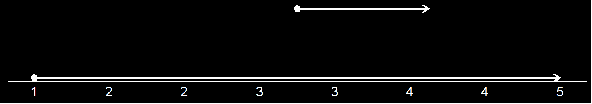
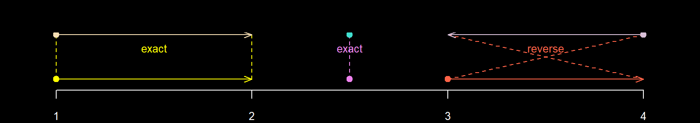
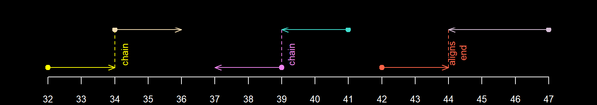
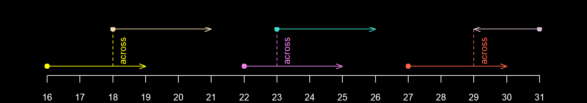
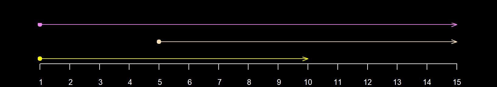

Number lines and overlaps
21 June 2020
number_line.RmdIntroduction
A number_line object is a range of numeric values on a number line. In diyar, how they overlap determine successful matches (see range matching) in record_group() and overlapping windows (see interval grouping) in fixed_episodes(), rolling_episodes() and episode_group().
number_line objects are similar to interval objects in the lubridate package but can support any numeric based object class..
Overview
For a given number_line object e.g. 8 <- 1, its main components are;
-
left_point()- left side of thenumber_linei.e.8 -
right_point()- right side of thenumber_linei.e.1 -
start_point()- lower end of the rangei.e.1 -
end_point()- upper end of the rangei.e.8 -
direction-"decreasing"(<-),"increasing"(->)or no direction(==) -
number_line_width()- difference between the left and right pointsi.e.-7
In "increasing" number_line objects, the start_point() is on the left_point() while in "decreasing" number_line objects, the start_point() is on the right_point().
library(diyar)
nl_a <- number_line(l=c(3,5), r = c(4,1))
# `number_line` objects
nl_a
#> [1] "3 -> 4" "5 <- 1"
# lower end of the range
start_point(nl_a)
#> [1] 3 1
# left part of the range
left_point(nl_a)
#> [1] 3 5Figure 1: number_line objects
You can reverse the direction of a number_line object with reverse_number_line().
# Only reverse decreasing `number_line` objects
nl_b <- reverse_number_line(nl_a, direction = "decreasing"); nl_b
#> [1] "3 -> 4" "1 -> 5"Figure 2: Direction of number_line objects 
Manipulating number_line objects
diyar has convenience functions to reverse, shrink, expand number_line objects, or shift the along the number line.
nl_c <- number_line(as.Date("04/04/2019", "%d/%M/%Y"),
as.Date("07/04/2019", "%d/%M/%Y"))
nl_c
#> [1] "2019-06-04 -> 2019-06-07"
# expand the `number_line` object by 2 days from both ends
nl_d <- expand_number_line(nl_c, 2); nl_d
#> [1] "2019-06-02 -> 2019-06-09"
# expand the `number_line` object by 2 days from the lower end
nl_e <- expand_number_line(nl_c, 2, "start"); nl_e
#> [1] "2019-06-02 -> 2019-06-07"
# shrink the `number_line` object by 2 days from the upper end
nl_f <- expand_number_line(nl_c, -2, "end"); nl_f
#> [1] "2019-06-04 -> 2019-06-05"
# shrink the `number_line` object by 2 days from both ends
nl_g <- expand_number_line(nl_c, -2); nl_g
#> [1] "2019-06-06 <- 2019-06-05"
# reverse the direction of the `number_line`
nl_h <- reverse_number_line(nl_c); nl_h
#> [1] "2019-06-07 <- 2019-06-04"
# shift the `number_line` object towards the left of the number line by 2 days
nl_i <- shift_number_line(nl_c, -2); nl_g
#> [1] "2019-06-06 <- 2019-06-05"
# shift the `number_line` object towards the right of the number line by 2 days
nl_j <- shift_number_line(nl_c, 2); nl_i
#> [1] "2019-06-02 -> 2019-06-05"Figure 3: Manipulated number_line objects 
invert_number_line() inverts the position of each point on the number line. See below.
inv <- number_line(c(3,-3,3,-3), c(-6,6,6,-6)); inv
#> [1] "3 <- -6" "-3 -> 6" "3 -> 6" "-3 <- -6"
inv
#> [1] "3 <- -6" "-3 -> 6" "3 -> 6" "-3 <- -6"
invert_number_line(inv)
#> [1] "-3 -> 6" "3 <- -6" "-3 <- -6" "3 -> 6"
invert_number_line(inv, "left")
#> [1] "-3 <- -6" "3 -> 6" "-3 -> 6" "3 <- -6"
invert_number_line(inv, "start")
#> [1] "3 -> 6" "3 -> 6" "-3 -> 6" "-3 -> 6"
invert_number_line(inv, "right")
#> [1] "3 -> 6" "-3 <- -6" "3 <- -6" "-3 -> 6"
invert_number_line(inv, "end")
#> [1] "-3 <- -6" "-3 <- -6" "3 <- -6" "3 <- -6"You can also convert number_line objects to a sequence of numeric based values
nls <- c(nl_c, nl_d, nl_e, nl_f, nl_g, nl_h, nl_i, nl_j)
nls
#> [1] "2019-06-04 -> 2019-06-07" "2019-06-02 -> 2019-06-09"
#> [3] "2019-06-02 -> 2019-06-07" "2019-06-04 -> 2019-06-05"
#> [5] "2019-06-06 <- 2019-06-05" "2019-06-07 <- 2019-06-04"
#> [7] "2019-06-02 -> 2019-06-05" "2019-06-06 -> 2019-06-09"
number_line_sequence(nls, by=2)
#> [[1]]
#> [1] "2019-06-04" "2019-06-06"
#>
#> [[2]]
#> [1] "2019-06-02" "2019-06-04" "2019-06-06" "2019-06-08"
#>
#> [[3]]
#> [1] "2019-06-02" "2019-06-04" "2019-06-06"
#>
#> [[4]]
#> [1] "2019-06-04"
#>
#> [[5]]
#> [1] "2019-06-06"
#>
#> [[6]]
#> [1] "2019-06-07" "2019-06-05"
#>
#> [[7]]
#> [1] "2019-06-02" "2019-06-04"
#>
#> [[8]]
#> [1] "2019-06-06" "2019-06-08"
number_line_sequence(nls, length.out = 3)
#> [[1]]
#> [1] "2019-06-04" "2019-06-05" "2019-06-07"
#>
#> [[2]]
#> [1] "2019-06-02" "2019-06-05" "2019-06-09"
#>
#> [[3]]
#> [1] "2019-06-02" "2019-06-04" "2019-06-07"
#>
#> [[4]]
#> [1] "2019-06-04" "2019-06-04" "2019-06-05"
#>
#> [[5]]
#> [1] "2019-06-06" "2019-06-05" "2019-06-05"
#>
#> [[6]]
#> [1] "2019-06-07" "2019-06-05" "2019-06-04"
#>
#> [[7]]
#> [1] "2019-06-02" "2019-06-03" "2019-06-05"
#>
#> [[8]]
#> [1] "2019-06-06" "2019-06-07" "2019-06-09"Overlaps
number_line objects can overlap with each other and do so in six ways - "exact", "inbetween", "across", "chain", "aligns_start" and "aligns_end". Each pair of number_line objects can only overlap by one these methods. For example, a number_line object can not have aligned start and end points, instead that’ll be considered an "exact" overlap.
The 6 overlap_methods are mutually exclusive.
There are 2 convenience methods - "none" and "overlap". These are mutually inclusive with the other 6.
Figure 4a: Example of exact overlaps
exact <- c(number_line(1,2), number_line(1,2),
# negative test - start_point() and end_point()
# for both must be identical to be an exact mactch
number_line(3,4), number_line(4,3),
number_line(2.5,2.5), number_line(2.5,2.5))
# positive logical test
exact(exact[c(1,3,5)], exact[c(2,4,6)])
#> [1] TRUE FALSE TRUE
# negtaive logical test
across(exact[c(1,3,5)], exact[c(2,4,6)])
#> [1] FALSE FALSE FALSE
# check overlap methods as defined in `diyar`
overlap_method(exact[c(1,3,5)], exact[c(2,4,6)])
#> [1] "exact" "none" "exact"
Figure 4b: Example of inbetween overlaps
inbetween <- c(number_line(5, 8), number_line(6, 7),
number_line(11, 10), number_line(9, 12),
number_line(13, 15), as.number_line(14))
# positive logical test
inbetween(inbetween[c(1,3,5)], inbetween[c(2,4,6)])
#> [1] TRUE TRUE TRUE
# negtaive logical test
across(inbetween[c(1,3,5)], inbetween[c(2,4,6)])
#> [1] FALSE FALSE FALSE
# check overlap methods as defined in `diyar`
overlap_method(inbetween[c(1,3,5)], inbetween[c(2,4,6)])
#> [1] "inbetween" "inbetween" "inbetween"
Figure 4c: Example of across overlaps
across <- c(number_line(16, 19), number_line(18, 21),
number_line(22, 25), number_line(23, 26),
number_line(27, 30), number_line(31, 29))
# positive logical test
across(across[c(1,3,5)], across[c(2,4,6)])
#> [1] TRUE TRUE TRUE
# negtaive logical test
inbetween(across[c(1,3,5)], across[c(2,4,5)])
#> [1] FALSE FALSE FALSE
# check overlap methods as defined in `diyar`
overlap_method(across[c(1,3,5)], across[c(2,4,6)])
#> [1] "across" "across" "across"
Figure 4d: Example of chain overlaps
chain <- c(number_line(32, 34), number_line(34, 36),
number_line(39, 37), number_line(41, 39),
# negative test - end_point() of one must lead to the start_point()
# to be considered a chain overlap
number_line(42, 44), number_line(47, 44))
# positive logical test
chain(chain[c(1,3,5)], chain[c(2,4,6)])
#> [1] TRUE TRUE FALSE
# negtaive logical test
across(chain[c(1,3,5)], chain[c(2,4,6)])
#> [1] FALSE FALSE FALSE
# check overlap methods as defined in `diyar`
overlap_method(chain[c(1,3,5)], chain[c(2,4,6)])
#> [1] "chain" "chain" "aligns_end"Figure 4e: Example of aligns_start overlaps
aligns_start <- c(number_line(45, 46), number_line(45, 47),
number_line(48, 49.5), number_line(48, 48),
number_line(51, 50), number_line(51, 52))
# positive logical test
aligns_start(aligns_start[c(1,3,5)], aligns_start[c(2,4,6)])
#> [1] TRUE TRUE TRUE
# negtaive logical test
across(aligns_start[c(1,3,5)], aligns_start[c(2,4,6)])
#> [1] FALSE FALSE FALSE
# check overlap methods as defined in `diyar`
overlap_method(aligns_start[c(1,3,5)], aligns_start[c(2,4,6)])
#> [1] "aligns_start" "aligns_start" "aligns_start"
Figure 4f: Example of aligns_end overlaps
aligns_end <- c(number_line(54, 55), number_line(53, 55),
number_line(56, 57.5), number_line(57.5, 57.5),
number_line(58, 59), number_line(60, 59))
# positive logical test
aligns_end(aligns_end[c(1,3,5)], aligns_end[c(2,4,6)])
#> [1] TRUE TRUE TRUE
# negtaive logical test
across(aligns_end[c(1,3,5)], aligns_end[c(2,4,6)])
#> [1] FALSE FALSE FALSE
# check overlap methods as defined in `diyar`
overlap_method(aligns_end[c(1,3,5)], aligns_end[c(2,4,6)])
#> [1] "aligns_end" "aligns_end" "aligns_end"Set operations
Set operations can be performed on number_line objects.
a <- number_line(1,10); b <- number_line(5, 15)
c <- union_number_lines(a, b)
a; b; c
#> [1] "1 -> 10"
#> [1] "5 -> 15"
#> [1] "1 -> 15"Figure 5a: Union 
c <- intersect_number_lines(a, b)
a; b; c
#> [1] "1 -> 10"
#> [1] "5 -> 15"
#> [1] "5 -> 10"Figure 5b: Intersection 
c <- subtract_number_lines(a, b)
a; b; c
#> [1] "1 -> 10"
#> [1] "5 -> 15"
#> $n1
#> [1] "1 -> 5"
#>
#> $n2
#> [1] "10 -> 15"Figure 5c: Subtraction 
Compressing number_line objects
You can compress a pair of overlapping number_line objects into one by using compress_number_line(). You can also choose to compress only those that overlap in a certain way.
When overlapping number_line objects have different directions, the resulting compressed number_line object inherits the direction of the widest among them. If they have the same width, the compressed number_line object takes an "increasing" direction.
Figure 6. Pairs of number_line objects overlapping by "inbetween" and "exact" methods compressed into one
cnl_a <- c(inbetween, exact); cnl_a
#> [1] "5 -> 8" "6 -> 7" "11 <- 10" "9 -> 12" "13 -> 15"
#> [6] "14 == 14" "1 -> 2" "1 -> 2" "3 -> 4" "4 <- 3"
#> [11] "2.5 == 2.5" "2.5 == 2.5"
cmp_a <- compress_number_line(cnl_a, deduplicate = T); cmp_a
#> [1] "5 -> 8" "9 -> 12" "13 -> 15" "1 -> 2" "3 -> 4"
#> [6] "2.5 == 2.5"
Figure 7. Pairs of number_line objects overlapping by "across" and "chain" methods compressed into one
cnl_b <- c(across, chain); cnl_b
#> [1] "16 -> 19" "18 -> 21" "22 -> 25" "23 -> 26" "27 -> 30" "31 <- 29"
#> [7] "32 -> 34" "34 -> 36" "39 <- 37" "41 <- 39" "42 -> 44" "47 <- 44"
cmp_b <- compress_number_line(cnl_b, deduplicate = T); cmp_b
#> [1] "16 -> 21" "22 -> 26" "27 -> 31" "32 -> 36" "41 <- 37" "47 <- 42"
Compress number_line objects that overlap in a particular way by using the methods argument.
Figure 8. Pairs of number_line objects overlapping by "aligns_start" and "exact" methods compressed into one
cnl_c <- c(aligns_start, aligns_end); cnl_c
#> [1] "45 -> 46" "45 -> 47" "48 -> 49.5" "48 == 48"
#> [5] "51 <- 50" "51 -> 52" "54 -> 55" "53 -> 55"
#> [9] "56 -> 57.5" "57.5 == 57.5" "58 -> 59" "60 <- 59"
cmp_c <- compress_number_line(cnl_c, deduplicate = T, methods ="aligns_start|exact"); cmp_c
#> [1] "45 -> 47" "48 -> 49.5" "50 -> 52" "54 -> 55"
#> [5] "53 -> 55" "56 -> 57.5" "57.5 == 57.5" "58 -> 59"
#> [9] "60 <- 59"
Collapsing number_line objects
The resulting compressed number_line object can yet again overlap with others, especially when not every method is used. This doesn’t happen by default but you can do so by changing collapse to TRUE.
It’s worth mentioning that this process starts from the first number_line object in the set and then proceeds to the last. Therefore, changing their position in the set can lead to different results.
Figure 9a: Compressing pairs of number_line objects by "across", "chain", "inbetween" and "aligns_end" methods
nl_z <- number_line(l= c(1,2,4,5,6), r = c(3,4,8,8,7))
nl_z
#> [1] "1 -> 3" "2 -> 4" "4 -> 8" "5 -> 8" "6 -> 7"
In the figure above, there are "across", "chain", "inbetween" and "aligns_end" overlaps but we’ve chosen to only compress pairs that overlap by "chain" and "aligns_end" methods. The resulting number_line object from compressing 1 -> 3 and 2 -> 4 now overlaps with the resulting number_line objects from 4 -> 8 and 5 -> 8.
Figure 9b: Compressing pairs of number_line objects by "chain" and "aligns_end" methods compressed into one
cmp_z <- compress_number_line(nl_z, methods = "across|chain")
cmp_z
#> [1] "1 -> 4" "4 -> 8" "5 -> 8" "6 -> 7"
As mentioned, if each number_line object’s position in the set changes, the result could also change. See below.
Figure 9c: Rearranged the pairs of number_line objects before compressing by "across", "chain", "inbetween" and "aligns_end" methods
nl_zb <- nl_z[c(2:5,1)]; nl_zb
#> [1] "2 -> 4" "4 -> 8" "5 -> 8" "6 -> 7" "1 -> 3"
cmp_zb <- compress_number_line(nl_zb, methods = "across|chain"); cmp_zb
#> [1] "1 -> 8" "5 -> 8" "6 -> 7"In Fig. 8b, 1 -> 3 came first, so only number_line objects that overlapped with 1 -> 3 were compressed. However in Fig. 8c, because of the new positions, 2 -> 4 came first, so only those that overlapped with 2 -> 4 were compressed.
In the example below, we change collapse to TRUE to collapse (rather than compress) the initial set (nl_z) which gives the same result as compressing the rearranged version (nl_zb).
Figure 9d: pairs of number_line objects overlapping by "chain" and `“aligns_end” methods collapsed into one
cmp_zba <- compress_number_line(nl_z, methods = "across|chain", collapse = T); cmp_zba
#> [1] "1 -> 8" "5 -> 8" "6 -> 7"
fixed_episodes(), rolling_episodes() and episode_group() are more advanced implementations of compress_number_line(). They can compress ("fixed_episodes") and collapse ("rolling_episodes") overlapping number_line objects. They have additional useful features such as controlling the order in which pairs are compressed i.e. chronological order (from_last) or a user defined order (custom_sort), and using additional periods (case_length and recurrence_length) before and/or (bi_direction) after the reference number_line object. See episode grouping for further details.